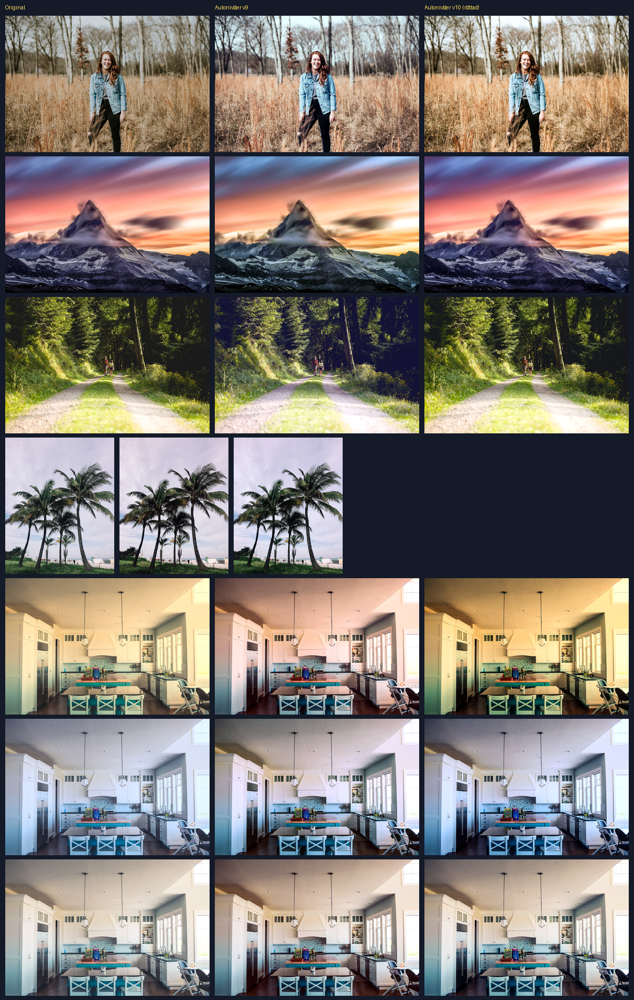
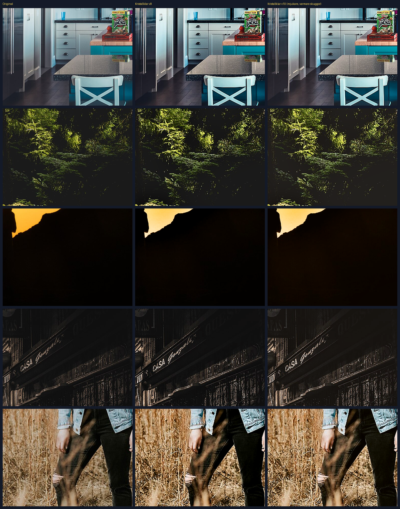

Klarbild – Nyheter
Version 10
- Autonivåer utan gulstick. Ljushet och kontrast räknas nu gemensamt för alla färgkanaler, så tonen blir lika kraftig som förut medan färgerna hålls naturliga. Färgstick tas bort försiktigt, och en kontroll ser till att hudtoner inte ändrar nyans mer än några grader.
- Kristallklar har fått mjukare, något varmare skuggor som behåller detaljerna och aldrig blir helt svarta. Skärpan i mellantoner och högdagrar är kvar.
- Favoritfilter: det som hette "Spara som standard" heter nu "Spara som favoritfilter". Inställningar du redan sparat följer med automatiskt.
- Brusreducering syns nu även i batchförhandsvisningen. Den förstorade förhandsvisningen har en tydligare etikett och stängs med Esc.
- Strömbrytare har större träffyta.
Version 9
- Brusdetektering och brusreducering, batchförhandsvisningar, ny Kristallklar, skarpare Naturlig, kraftigare Autonivåer.
← Tillbaka till Klarbild
Jämförelser
Autonivåer: original, version 9 och version 10.

Kristallklar, skuggor: original, version 9 och version 10.
